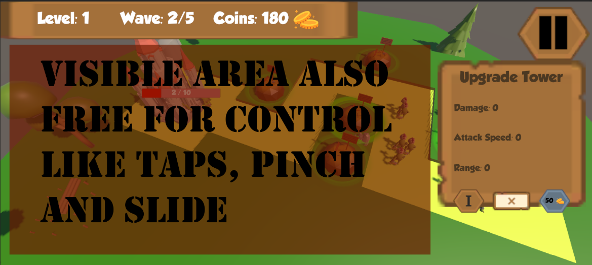
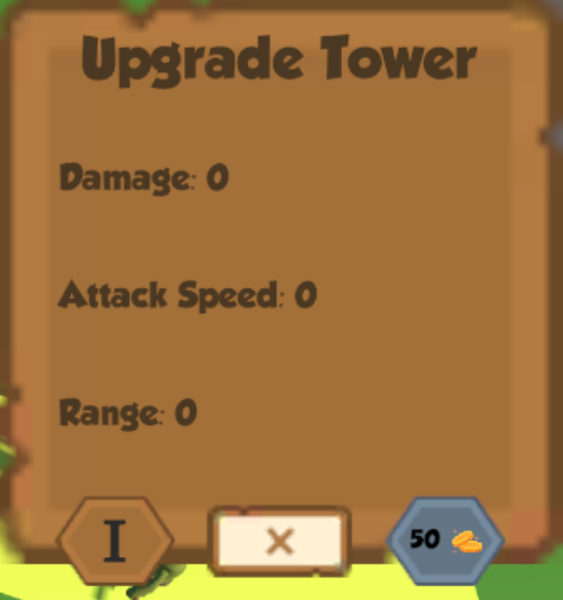
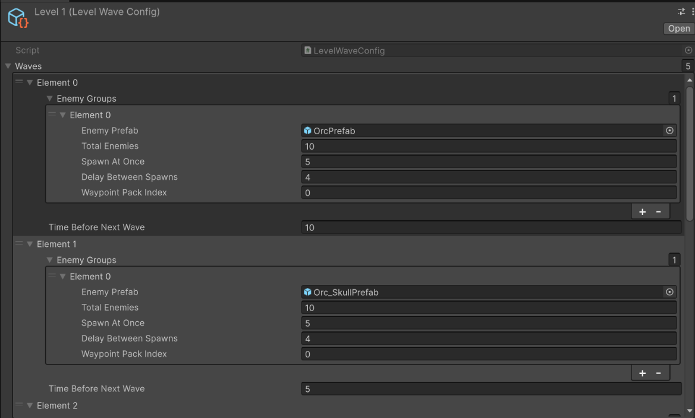
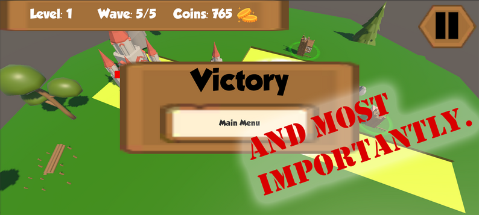
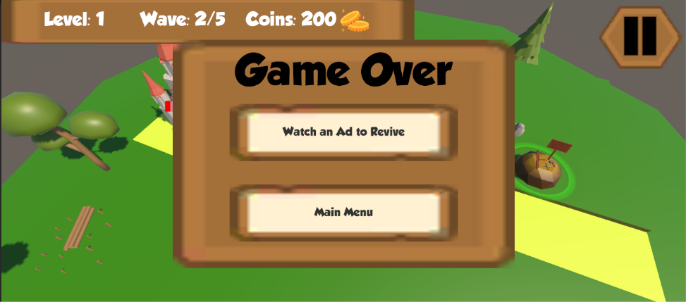
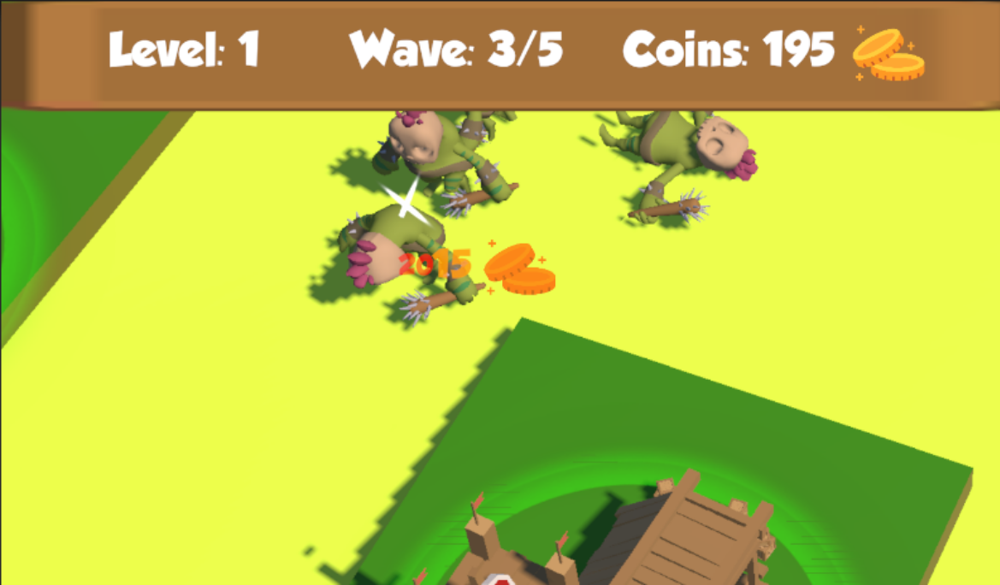
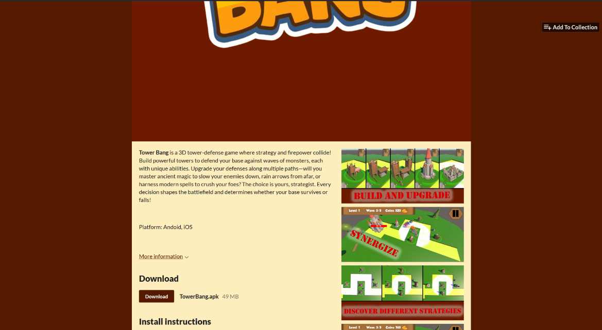

Tower Bang
Gameplay
Description
Tower Bang is a mobile tower-defence game where players defend against waves of enemies using towers with branching upgrade paths, allowing them to develop and experiment with different defensive strategies.
The project was developed as part of my ""Developing for Mobile" elective at Hanze University of Applied Sciences. It was my first experience developing a mobile game, giving me the opportunity to explore the design and technical considerations that come with creating games for smaller screens.
Throughout development, I learned how to analyse and make effective use of limited screen space, implement camera controls suited for mobile devices, and apply UI design principles that improve readability and accessibility on smaller displays. I also gained experience adapting gameplay systems and interactions to a mobile environment, while considering how players would navigate and interact with the game.
My Role
Mobile UI & Screen Analysis
One of the biggest learning experiences of this project was designing an interface specifically for mobile devices. I started by analysing the available screen space, considering how players would hold their phones, interact with the game, and access important information without obstructing the battlefield.

I chose landscape orientation to give players a wider view of the level, while designing the interface around touch interactions such as tapping, dragging, and pinching to control the camera. I also worked with UI anchors and Layout Groups to ensure that interface elements maintained their positions across different screen resolutions.

A particular challenge was presenting tower information without taking too much attention away from the gameplay. I implemented a dynamically populated upgrade interface that displays the selected tower's statistics, upgrade costs, and available upgrade paths. This allowed players to make informed decisions while keeping the battlefield visible.

Gameplay Systems & Modularity
On the technical side, I developed the core gameplay systems in Unity, including enemy spawning, tower behaviour, upgrades, and wave progression.
I focused on keeping these systems modular and configurable rather than relying on hardcoded behaviours. Towers, enemies, and projectiles were built around reusable base classes and prefabs, allowing their behaviour and properties to be extended without duplicating large amounts of code.
I also implemented the wave management system using Scriptable Objects. This allowed me to configure enemy types, quantities, spawn intervals, and delays between waves directly in the Unity Inspector. It made balancing and adjusting the difficulty much easier without having to modify the underlying code.

Monetisation & Visual Effects
Another area I explored was mobile game monetisation. I designed and implemented a rewarded video ad system using Unity Ads. Rather than interrupting gameplay with forced advertisements, players are offered the option to watch an ad after losing a level. Completing the advertisement allows them to revive and continue playing.


Game-over screen and optional rewarded advertisement revive system.
I also experimented with creating simple visual effects for mobile gameplay. These effects were used to make combat interactions more noticeable and provide immediate visual feedback without relying on unnecessarily complex effects that could impact performance.

Store Page & Target Audience
Beyond the development of the game itself, I also worked on how Tower Bang would be presented to potential players. Using the target audience research from my design document, I created the game's itch.io store page, including its visual presentation, screenshots, and promotional text.
I focused on communicating the main selling points of the game through its visuals, highlighting tower variety, upgrade possibilities, strategic experimentation, and progression. I also designed the app icon and promotional screenshots to maintain a consistent visual identity and make the game immediately recognisable.
